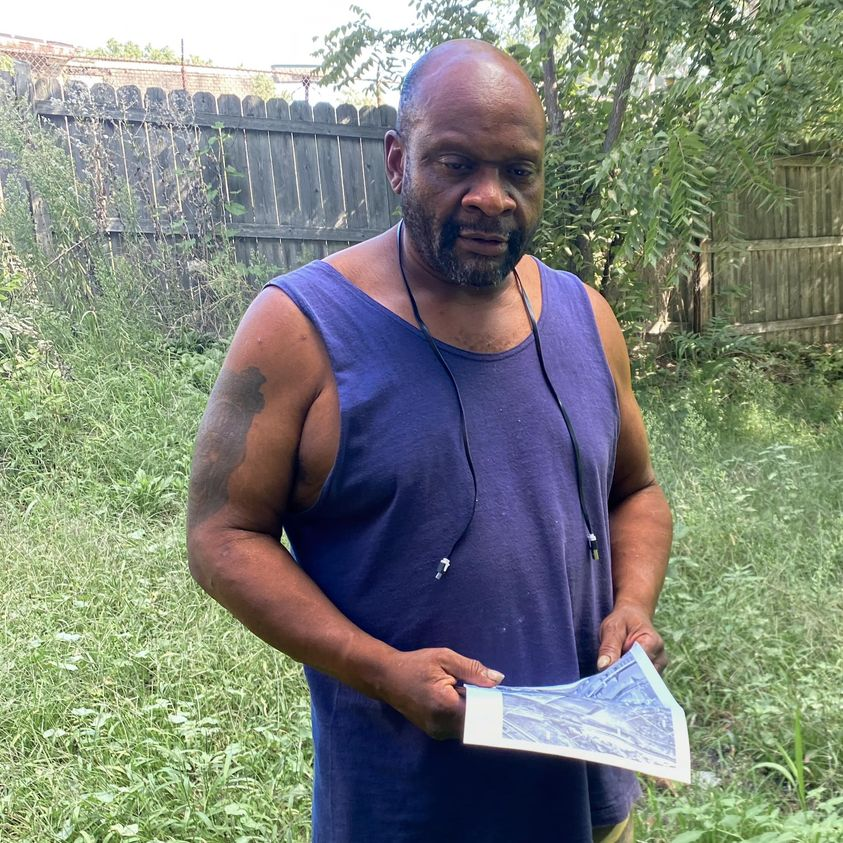

Mobile uploads
This is Cadillac. This picture was taken this past September.
He’s a veteran.
He had just gotten news that the house he was renting (from me) had just been officially condemned.
He looked so despondent that day. So defeated.
Our friend Hermaine had just been shot in the yard of this house. (The killers have never been caught. I left a message to give a statement. They never spoke with me. We all know who did it and we were willing to talk to the police. The police have never had any interest in this case.)
The police, in concert with the housing inspector, quickly moved to condemn the house after this murder.
Cadillac simply got caught up in it all. He was washing dishes in the kitchen when Hermaine was murdered. He was not involved in any way. He was just trying to live his life quietly in this house.
I think Cadillac suffers from PTSD and anxiety and depression. Picking up and moving is not something a guy like him can do particularly easy.
He seemed so beaten that day. That was the feeling I was trying to capture in this picture.
He has illegally lived in that house since then. I never publicly talk about it because the system monitors my public statements. They would have arrested him if they had proof he was living there.
He hauls water from my building. He has an extension cord from my building. I collect his trash every week. It’s a pathetic, tragic excuse for how to care for a veteran. But it’s all I can think to do.
Memorial Day is a lie. It’s easy to care about someone we ground up in the machines of war in someone else’s country. It’s easy to care about a dead soldier. What do we do with a soldier like Cadillac? Apparently we let him rot illegally in a condemned house. That’s what it looks like from my perspective.
We don’t care when it matters. We care when it’s convenient and easy. Buy a mattress. Eat a hamburger. That’s the extent most Americans can “care” about our veterans.
But here’s the thing.
Tomorrow, Cadillac closes on his very own house. CADILLAC BOUGHT A FREAKING HOUSE!
He has been working on it for months. He’s moving to the east side of Cleveland to be closer to veterans services.
(Another veteran friend of mine who lived in this house for a couple years rent free moved up there too.)
They really help those guys up there.
I’ve been working with a lady from veteran services to help get some paperwork together so Cadillac could buy this house.
Maybe condemning this house was the motivation Cadillac needed to move on.
I’m at this really trippy point in my life where I just don’t know what actions will yield what results.
And honestly, this story could have gone another way. Cadillac could have gone to jail for being in this house (he actually maybe already has. The police use it as a trap to catch people going in and out of it. Several people have gone to jail for living in this house.)
And then he could have ended up in a tent. It’s so hard to dig your way out of homelessness once you move into a tent.
But that’s not what happened. He stuck it out in that house with an extension cord and buckets of water while he methodically worked on buying a house.
It was truly an inspiring act of persistence and determination. An against all odds kind of story.
I’ve never once seen a homeless person buy a house. It was so mind blowingly amazing.
Happy Memorial Day, Cadillac. You are an incredible human being.